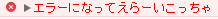
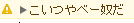

ここではconsoleオブジェクトの使い方について説明して行きたいと思います！
consoleオブジェクトと聞くと授業でよく使うconsole.logが一番最初に思いつくんじゃないでしょうか！
実はconsoleオブジェクトはconsole.logを含めて19個もあるんです！
19個のconsoleオブジェクトは以下の通りです。
ざっくりと説明もあります。
| メソッド名 | 説明 |
|---|---|
| log | コンソールに「ログメッセージ」を出力 |
| info | コンソールに「情報メッセージ」を出力 |
| warn | コンソールに「警告メッセージ」を出力 |
| error | コンソールに「エラーメッセージ」を出力 |
| dir | コンソールに「オブジェクト」を出力 プロパティ名と中身の値をまとめて確認できる |
| dirxml | コンソールに「DOMオブジェクト」を出力 DOMツリーの構造をまとめて確認できる |
| count | コンソールに「デバッグメッセージ」と「累計実行回数」を出力 |
| assert | 診断結果が偽の場合コンソールに「エラーメッセージ」を出力 |
| trace | コンソールに「現在の関数スタックの状態」を出力 |
| clear | コンソール内をクリア |
| time | タイマー計測を開始 |
| timerEnd | タイマー計測を終了 |
| timeStamp | メソッド実行時の時間をlogに出力 |
| markTimeLine | <タイムラインビュー上でメソッドが呼ばれたポイントに、引数で渡されたラベルを表示する/td> |
| profile | プロファイルを開始 |
| profileEnd | プロファイルを終了 |
| group | グループ表示を開始(展開された状態) |
| groupCollapsed | グループ表示を開始(折り畳まれた状態) |
| groupEnd | グループ表示を終了 |
| debug | オブジェクトの中身を文字列として展開 |
こう見るとめっちゃ多いですねー全部覚えるのは大変そうです。
そこで簡単なものをピックアップしてコードと一緒に説明しようと思います。
赤い文字で表示されるエラーメッセージです。
エラーとみなす場所にぜひどうぞー
console.error('エラーになってえらーいこっちゃ');

僕のこの渾身のダジャレもエラーですね
警告！という意味です。
注意するべきか所にどうぞー
console.warn('こいつやべー奴だ');

(i)マークで注目させる！
console.info('はーい、皆さんが先生に注目するまでに5分かかりました！');
皆さんも色んなconsoleオブジェクトを使って理解を深めましょう！！！！